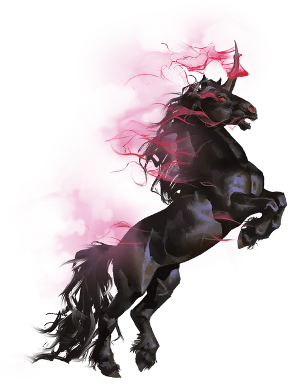

Осквернённый аватар Лару
Corrupted Avatar of Lurue
Большой Монстр

Класс Доспеха 14 (природный доспех)
Хиты 90 (12к10 + 24)
Скорость 50 футов, летая 50 футов (парит)
| мод | спас | ||
|---|---|---|---|
| СИЛ | 18 | +4 | +4 |
| ЛОВ | 14 | +2 | +2 |
| ТЕЛ | 15 | +2 | +2 |
| мод | спас | ||
|---|---|---|---|
| ИНТ | 11 | +0 | +3 |
| МДР | 17 | +3 | +6 |
| ХАР | 16 | +3 | +6 |
Иммунитет к урону яд
Иммунитет к состояниям отравление, паралич, очарование
Чувства тёмное зрение 60 футов, пассивное Восприятие 13
Языки Небесный, Сильван, Эльфийский, Телепатия 60 фт.
Опасность 8 (3900 опыта)
Бонус мастерства +3
Действия
Мультиатака. Аватар совершает две атаки: одну копытами и одну рогом.
Копыта. Рукопашная атака оружием: +7 к попаданию, досягаемость 5 фт., одна цель. Попадание: 32 (8к6 + 4) урона некротической энергией.
Рог. Рукопашная атака оружием: +7 к попаданию, досягаемость 5 фт., одна цель. Попадание: 32 (8к6 + 4) урона некротической энергией. Если цель - гуманоид, она должна преуспеть в спасброске Мудрости Сл 13, иначе превратится в волка под контролем аватара. Это преобразование длится 1 час, или пока хиты цели не снизятся до 0 или она не умрёт. Игровая характеристика цели заменяется на характеристики волка, но он сохраняет свои хиты. Цель ограничена в действиях, которые она может совершать в своей волчьей формы, и она не может говорить, накладывать заклинания или выполнять какие-либо другие действия, требующие рук или речи. Снаряжение цели объединяется с новой формой, и она не может активировать, использовать, владеть или иным образом извлекать выгоду из своего снаряжения.
Описание
В обычных обстоятельствах аватар Лару представляет собой захватывающее зрелище; его серебристая, похожая на звездную пыль грива, мерцающие копыта и идеальной формы спиральный рог вызывают трепет даже у самых закаленных душ. Каким бы мощным и ярким он ни был в своей истинной форме, настолько же он испорчен в этом своём состоянии. Этот оскверненный аватар Лару превращается в оживший кошмар, с некротической энергией извивающейся и танцующей на кончике его чёрного рога.
Оскверненный влиянием Малара, аватар Лару выполняет волю Повелителя Зверей: убивать всех, кто осмелится встретиться на его пути.